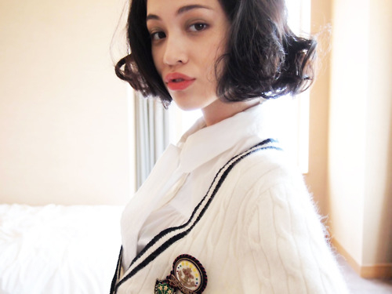
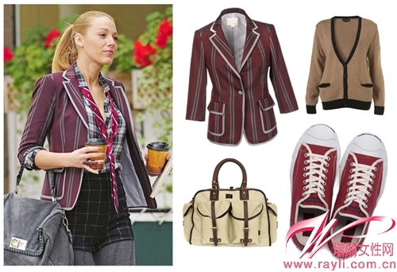
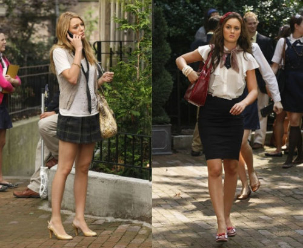

正文: 2015.06.09修正
有妹子提到乳腺型胸部，这个确实是我疏忽没有提及。
这类胸部不是靠减肥减脂就可以变小的，毕竟腺体占的比重比较大。
而本答案是根据脂肪型胸部来写的，所以对乳腺型胸部的妹子来说，参考性不大。
因本人对乳腺型胸部不了解，具体情况在这里不做讨论。
请慎读。
若要问我乳腺型胸部怎么办......
按题主的问题，我依然认为太大的胸部很难穿好【传统意义】上的英伦学院小清新的感觉。
不过可以稍微调整，尝试那种微露的性感，不挑逗不艳俗，可以很清新。
虽然少了干练帅气，但多了份女性柔情不是么？
（实在找不到合适的例图，如有合适的图片，烦请私信）
至于怎么测试自己的胸部类型，请百度。
原文如下：
共11图，请注意流量XD
之前回答带着点冲动，所以排版啊用词啊都没太注意，今天来好好谈谈。
怒答！！！！！！
作为一个大胸妹子，我实在不能接受最高票的答案。
竟然说英伦风、小清新跟胸大胸小没关系？？？竟然说遮住了看不见就不影响？？？
在时尚搭配这方面，这是根本上的错误啊，完全就不对路！！！
多年的血泪史让我情绪激动了点......原谅我(┬＿┬)
可能最高票的妹子实在没经历过......原谅你(┬＿┬)
那么，就让我来划一下重点吧！
英伦学院小清新，胸部大小是很关键的，直接影响整体fu。
这三种风格都不太欢迎大胸脯，而我们要做的，就是尽量让胸部显得小一点。
先举两个反面栗子：
- 衣服宽松面料柔软的小清新，会让胸大的妹子看起来上围爆肥，再惨一点儿的还会牵连肩膀手臂也显得粗。本想遮住让旁观者产生视觉偏差，结果却适得其反；
- 而英伦风的风衣，学院风的格子衫和V领背心什么的，说是裹住大胸看不见，但完全脱离这两种风格的基调，从英伦和学院的角度来看根本就是美感全无！
正常的学院风是这样的↓↓↓↓↓↓↓↓↓↓↓↓↓↓↓↓↓↓↓↓
资料显示KIKO的三围是B75 W60 H85，你们自己YY一下胸部如果变成85D是什么感觉，估计画风都变了......我实在没找到大胸的学院风，岛国片资源丰富的再帮忙看看有木有_(:з」∠)_
以上...胸大对于英伦风、学院风和小清新这三种风格的破坏力我基本说完了，啊多么痛的领悟~~~T^T
不多废话直接回答题主问题，就是——没有办法！
唯一的办法就是，减肥。
别说我这是废话啊，你要真想尝试这三种风格，就得瘦。
一个瘦妹子，基本是不会有太大的胸部的。女孩子一旦瘦了，胸部自然就会缩水。<运动练胸肌希望减肥不减胸的除外>
这里要提醒汉子们一句，看到瘦瘦的姑娘拖着大大的胸，比例都很不协调的那种，可以基本推断这个胸部“掺水”。
问我为什么？你别忘了胸部大小基本靠脂肪组织决定了啊喂！全身都瘦不拉叽的姑娘脂肪能有多少？到了胸部脂肪就多得不正常那可能性太小了啊！纯天然的也有，但比较少，都是天赐尤物！！！请抓牢！！
<比如我大学一室友，瘦得都能看见肋骨了，胸部还是C+。经过目测加手测咳咳，真胸。班里其他妹子曾无数次求问丰胸办法，她那一句“天生的”让多少人心碎~~~>
【这里还要给少年们补充一点，如果大胸妹纸平躺，胸部还是挺挺的木有扁，完全不受地心引力影响，那你基本就可以断定此胸并非纯天然健康品啦（¯﹃¯）】
权威资料看这里：
以下大体介绍构成乳房的主要组织。跑题了.........拉回来！
乳腺组织：成年女性乳腺组织由15-20个乳腺叶组成，其主要功能是泌乳，还具显示女性特征的作用。乳腺叶由许多乳腺小叶构成，乳腺小叶含有很多腺泡。
脂肪组织：脂肪组织包裹整个乳腺组织（乳晕除外），脂肪组织层厚则乳房大，反之则小。
结缔组织：即连接胸部浅筋和胸肌筋膜的纤维束，起支撑的和固定乳房的作用。
血管、淋巴管和神经：乳房含丰富的血管和神经，血管和淋巴管的主要功能是供给养分和排除废物。神经与乳房皮肤的感觉器相连，感知外边刺激。
接上面说到...一个瘦妹子，基本是不会有太大的胸！所以，当你变瘦了以后（尤其是配上节食的办法瘦下去的），胸部缩水是不可避免的，上面说到了嘛，胸部大部分都是脂肪。【当然，想要减肥不减胸也是可以的，滚去练胸肌！不过这又是另一个话题了╮(╯▽╰)╭】
而按照题主的情况，162cm-92斤，目测不会有太大的胸部，最大应该就C了，所以瘦个5斤左右，皮肤紧实一点，体脂率稍低一点，穿英伦风应该就影响不大了。
下面上图，激励偏爱英伦风的你我她们大胸妹子们......T^T
就这么多吧，不管有没有激励题主，反正是激励到我了...
睡了，明儿继续努力。耶！
==========原来我也有画分割线这一天啊，是这么画的嘛？===============
评论里有个妹子希望我能给楼主提一些正向的建议.........
那咱们就按情况划分一下——
- 胖胖的大胸妹子们，不滚去减肥还来问我怎么穿衣服好看你是在做梦吗？？！！！完
- 身材适中的大胸妹子们：
- 最开始的几个反面栗子请牢牢记住。
- 腰和上臂，一定一定要瘦。不然你怎么显胸小都没用。
- 如果你愿意，减肥。这个过程中胸部会变小，穿衣的整体效果也会好很多。搭配风格，服装类型，本人真是基本尝试遍了，但在视觉上基本都没什么缩小胸部的效果.....反倒是慢慢地瘦了之后，穿衣方面不会显得胸部太突出。这里一定要提醒妹子们一句，不要过分节食，一定要搭配运动，否则容易出现乳房不紧实甚至下垂的情况。我始终认为女人的美感不在于胖或者瘦，而在于线条。
- 穿衣在讲究搭配之前，最基本的是要合身。什么叫合身，就是尺码合适——胸围肩长，手臂腹部，各个部分都要穿着合身。当然，修身也重要。但最根本还是合身，再强调一遍，合身！！！
- 我个人比较倾向穿衬衫。请不要自动脑补大胸部崩掉衬衫扣子的画面.........根据合身修身的原则，我建议的衬衫是要收腰那种。修身的牛仔衬衫是答主的最爱，过年又入了4件白衬衫，捂脸~~
- 再就是小西装。还是合身修身的原则，要修身收腰小西装，腰部线条明显，不系扣。肩宽骨架大的妹子，注意不要有垫肩，容易显得虎背熊腰；骨架小肩窄的可以有垫肩。不知道自己属哪类的去百度【女生标准身材尺寸】。（不要看到西装衬衫就往职业装那方面想，现在时尚款很多，而且面料也有很多选择）
合身且修身的西装外套+格子衬衫。衬衫最上面约4颗扣子是解开的，形成V领效果，V领显瘦应该是常识了吧？可以拉长线条显脸小，延伸脖颈线条显瘦，修饰胸型。再用红条纹领带搭配，不显单调。各位可以再自行想象一下扣子系上的效果。有妹子会说，露这么多可能不符合国情...你不会少解几颗啊！
<雷区看这里：>
- 雪纺面料请坚决说不。尤其是宽袖不收腰的雪纺衫。不信你试试，绝对说你是35以上怀二胎的身材(╯‵□′)╯︵┻━┻
- oversize的休闲外套的话，绝对不要系扣子，绝对不要。如果要系扣子或者拉拉链穿的话，你的上半身绝对是个球...........
- 一切蝙蝠袖的上衣。答主说到这里都眼泪汪汪的，真是用自己的血泪史来奉劝妹子不要跳火坑啊！！！记住，蝙蝠袖，不要！！
- 你可以遮！！！！！没错，因为你身材够好，不会虎背熊腰，你要做的就是显胸小。

最后来张对比。左图Blake胸大（她本人应该有D，此图不明显），所以选择了长领带拉长胸前视线；右图Leighton小胸，所以选择了丝巾围领和荷叶边做修饰。
以上建议都是基于，大胸妹想穿英伦学院小清新这个前提。
如果你要走性感路线，那还纠结个咩啊~
2015.3.4更新，以上。